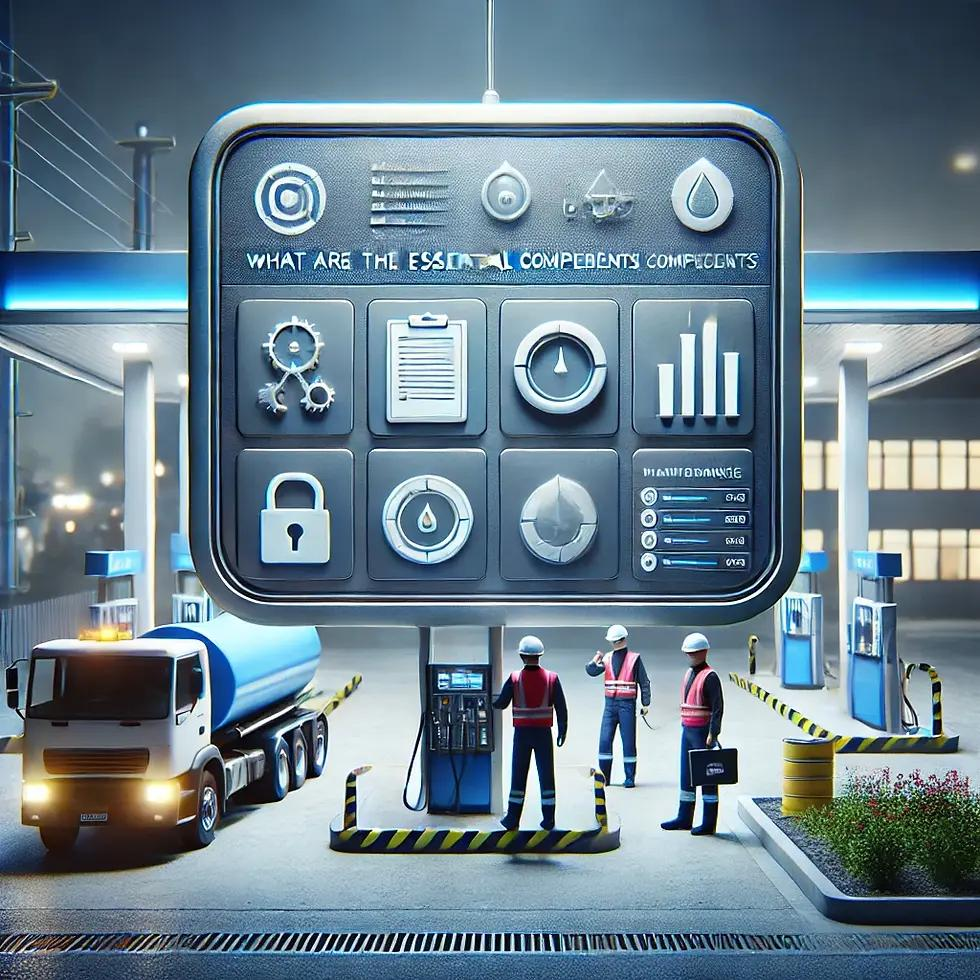
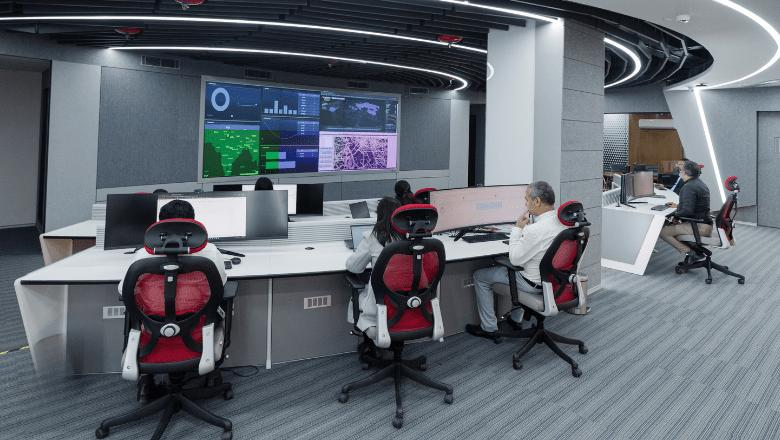
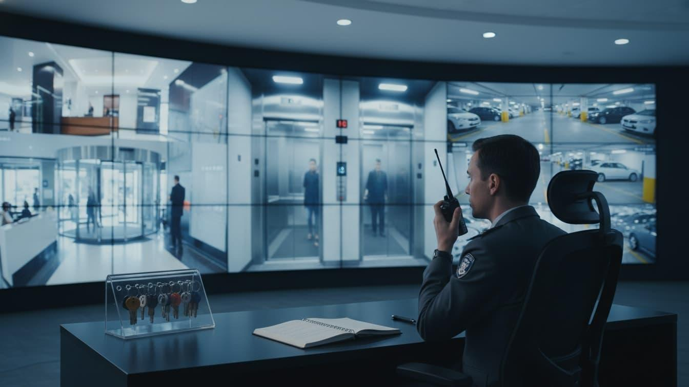
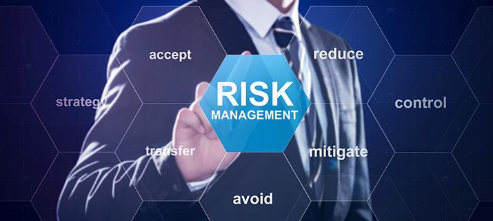
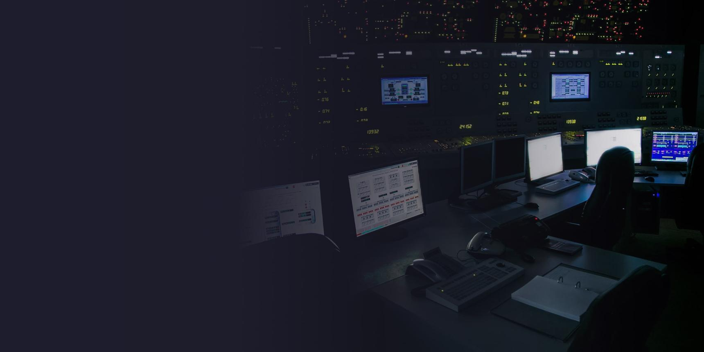

SentinelIQ AI is an AI-powered cybersecurity and safety platform built for UK petrol forecourts. It detects threats, predicts risks, and automates response in real time protecting lone workers, reducing fuel theft exposure, and ensuring HSE compliance across late-night retail operations.
UK independent petrol forecourts face an escalating "Operational Safety Gap": a 62% surge in fuel theft, 950,000+ annual verbal abuse incidents, and lone workers operating overnight without real-time safety netting. SentinelIQ AI is the predictive shift-risk infrastructure that turns fragmented shift data into a coordinated safety layer protecting staff, reducing insurance premiums, and ensuring HSE compliance.
SentinelIQ AI combines Threat Intelligence, Real-Time Detection, Automated Response, Behaviour Analytics, Risk & Compliance, and Cloud-Native Security into one unified B2B SaaS platform no complex hardware, no black-box algorithms, real-time predictive safety.
Leverage global threat feeds and AI models to identify advanced threats early before they impact your forecourt operations.
Detect and prioritise threats in real time across endpoints, networks, and cloud environments with automatic escalation on missed check-ins.
Automate response actions to contain threats and reduce response time turning reactive emergency management into proactive safety governance.
Moves beyond reactive panic buttons to a live safety decision layer that screens every shift before it begins computing a transparent Risk Score + Confidence Level rather than relying on gut feel.
Captures proprietary "Shift-Risk DNA" linking lone-worker schedules, crime indices, and site incident history into an operational safety asset competitors cannot replicate without years of UK-specific data.
Creates legally auditable HSE compliance logs via Manager Override Reason Capture enabling operators to negotiate lower liability insurance premiums and avoid regulatory penalties under INDG73 and INDG424.
Designed to work immediately without API dependencies. Simple CSV/manual rota inputs enable instant deployment across 3–5 pilot forecourts without waiting on corporate IT approvals or hardware installations.
Eliminates unnecessary physical "wellness visit" callouts (reducing transport emissions), digitises paper-based safety logs, and protects vulnerable lone workers from the mental health toll of retail crime hostility.
Tiered SaaS from £100/month giving independent UK petrol forecourts enterprise-grade predictive safety intelligence without the cost of full Security Operations Centres or dedicated monitoring teams.
SentinelIQ AI is a UK-based B2B SaaS venture co-founded by Vamsi Krishna Kotha and Sriveni Gaddam combining deep UK private security operations expertise with frontline retail management experience to solve the most pressing challenge facing UK petrol forecourts: the "Operational Safety Gap" that leaves lone-night workers dangerously exposed and costs operators millions in avoidable liabilities.
We aspire to be the global standard for "predictive shift-safety governance" fostering a future in which every late-night and 24/7 physical retail operation runs with total lone-worker reliability, proactive hazard mitigation, and the sustainable, data-driven resilience required to protect frontline workforces and secure operating margins worldwide.
To empower independent and multi-site UK petrol forecourt and convenience operators to achieve operational safety and margin resilience by leveraging rules-based, predictive shift-risk intelligence to eliminate lone-worker safety blind spots, protect operating margins, and ensure robust regulatory compliance across late-night retail environments.
Accurate shift-risk profiling and elimination of safety blind spots via dependable, rule-based, real-time predictive insights and transparent data confidence levels.
Helping independent petrol forecourt operators protect operating margins and safeguard lone frontline workers from the volatility of retail crime, fuel theft, and late-night operational disruption.
Powerful safety-governance intelligence delivered with low-friction, intuitive interfaces lightning-fast frontline check-ins and simple CSV scheduling uploads woven into the busy daily retail workflow.
Transparent, legally auditable override and check-in logs enforced through our Manager Override Feature with Mandatory Reason Capture ensuring compliance with UK HSE guidelines.
Equipping retail convenience entrepreneurs and isolated night-shift workers with the predictive intelligence needed to secure physical operations, reduce staff-retention anxiety, and scale without adding complexity.
Reducing the carbon footprint of physical security checks, eliminating paper-based compliance waste, and protecting the mental health of lone workers facing escalating retail crime.
Vamsi's professional trajectory defined by his MSc in Cyber Security from the University of Hertfordshire and his experience as Director at Limestone Ltd and Operations Manager at Security Hub Ltd provides first-hand expertise in risk management, incident response, team scheduling, and securing physical operations within the UK private security industry. His background in information security systems design, dynamic threat modelling, and secure multi-tenant database structures forms the technical backbone of SentinelIQ AI's shift-risk fingerprinting engine and automated escalation pathways.
Sriveni holds an MSc in Management with Extended Professional Practice from Coventry University, London, and possesses extensive ground-level retail experience as a team leader and sales assistant at WHSmith (including high-pressure operations at Churchill Hospital, Oxford, and Richmond, London). Her hands-on experience in retail shift scheduling, stock compliance, and frontline lone-worker anxieties ensures SentinelIQ AI's user interface is designed for real-world usability simple, fast check-ins with immediate, reassuring on-screen confirmations rather than distracting gamification.
Every feature is built specifically for the high-risk UK petrol forecourt environment not retrofitted from generic security tools. Our proprietary Shift-Risk Fingerprinting engine and active safety escalation workflows translate complex shift-level vulnerabilities into actionable, compliance-ready KPIs that operators actually need.
Leverage global threat feeds and UK-specific crime indices to identify advanced shift-level threats early before they escalate into physical confrontations or missed check-ins.
Detect and prioritise threats in real time automatically monitoring lone-worker check-in intervals and triggering escalation within 2.2 minutes of a missed check-in.

Automated ResponseAutomate response actions to contain threats and reduce response time transforming reactive emergency management into proactive, pre-shift safety governance.

Risk & Compliance AnalyticsContinuous risk assessment and compliance monitoring with audit-ready reports ensuring full alignment with UK HSE lone-working guidelines INDG73 and INDG424.

Behaviour AnalyticsAnalyse shift patterns and site behaviour to detect anomalies and insider risks surfacing hidden operational vulnerabilities before they become safety incidents.
Protect your data, applications, identities, and infrastructure seamlessly with secure multi-tenant architecture, full UK GDPR compliance, and plug-and-play API integrations.
SentinelIQ AI is the only platform combining predictive pre-shift risk screening, real-time escalation automation, UK-specific lone-worker intelligence, and legally auditable HSE compliance in a single SME-optimised SaaS.
| Feature / Capability | Rota Platforms (Deputy/Planday) | Legacy CCTV / ARCs (Verisure) | Lone-Worker Apps (Peoplesafe) | Manual Ops | SentinelIQ AI |
|---|---|---|---|---|---|
| Pre-Shift Risk Screening | No | No | No | No | ✓ Shift-Risk Fingerprinting |
| Automated Check-In Escalation | Passive scheduling | Post-incident only | Manual trigger | Phone calls | ✓ Auto <3 min escalation |
| Risk Score + Confidence Level | No | No | No | Gut feeling | ✓ Transparent + Plain-Language |
| Manager Override + Reason Capture | No | No | No | No audit trail | ✓ Mandatory + Legally Auditable |
| HSE INDG73/INDG424 Compliance | Partial | No | Limited | No | ✓ Full audit-ready logs |
| UK Forecourt Crime Intelligence | No | No | No | No | ✓ ACS 2026 data integrated |
| Offline / Low-Data Fallback | No | No | Crashes | Paper-based | ✓ Baseline templates + manual |
| Cost Structure | Per-user SaaS | High CapEx hardware | Device-dependent | Time-intensive | ✓ SME-optimised SaaS |
The UK convenience retail market reached £48.5 billion in 2025, with approximately 8,365 active petrol forecourts 65% of which are independent SMEs operating on razor-thin 2–4% fuel margins. SentinelIQ AI targets this high-risk, underserved segment with affordable, immediately deployable predictive safety governance.
Target addressable market across UK forecourt and convenience operator types
Primary safety challenges driving adoption of SentinelIQ AI (ACS 2026 data)
Platform capabilities vs existing market alternatives across key safety dimensions
Global market growth (USD B) + UK SafetyTech adoption trajectory (%)
Capability scores across key operational safety intelligence dimensions (out of 100)
SentinelIQ AI operates as a closed-loop safety lifecycle screening, monitoring, escalating, overriding, reporting, and continuously evolving your forecourt's safety logic, so every shift decision is grounded in real predictive intelligence, not reactive firefighting.
SentinelIQ AI ingests your site data rota schedules, historical incident logs, staffing patterns, regional crime indices, and police response profiles to build a comprehensive "Shift-Risk DNA" baseline for every forecourt location.
The Assessment phase surfaces the hidden cost of unmanaged lone-worker exposure, giving you a precise, data-driven view of your "Operational Safety Gap" before any strategy is deployed.
The Monitoring Engine continuously tracks live signals scheduled check-in intervals, lone-worker shift start/end, staffing levels, and real-time site alerts flagging at-risk situations the moment they emerge.
Think of it as a 24/7 safety manager watching every shift signal objective, continuous, and immediately actionable without requiring intrusive surveillance.
The Shift-Risk Fingerprinting engine cross-checks scheduled parameters against local crime indices, staffing levels, and historical incident patterns computing an objective Risk Score + Confidence Level before every lone-worker shift begins.

Phase 03 · Risk Fingerprinting
Phase 04 · Escalate & InterveneWhen a missed check-in is detected, the Active Safety Escalation Engine automatically fires tiered supervisor alerts, launches emergency backup workflows, and prepares compliance dossiers shrinking response from 45 minutes to 2.2 minutes.
The Forecourt Incident Intelligence Network (FIN) enables anonymised "Shift-Risk DNA" benchmarks from UK forecourt sites so risk trends from London locations automatically optimise safety baselines for operators in Oxford or Manchester.
Every shift override, check-in event, and safety intervention is delivered as a prioritised, audit-ready Compliance Performance Report not raw data exports. Operations, HR, Risk, and Finance all receive the specific ROI evidence they need.
Everything you need to know about SentinelIQ AI and what it means for your forecourt's safety compliance, staff retention, and operational efficiency.
Every tier is designed to deliver a measurable operational return on investment within 8 to 12 weeks of pilot deployment reducing emergency escalation latency, achieving 100% check-in compliance, and generating legally auditable HSE compliance logs that lower insurance premiums.
Rules-based safety governance for independent petrol forecourts and local conveniences running lone-worker evening shifts.
Dynamic predictive risk intelligence for multi-site forecourts and high-risk retail operators requiring real-time shift-level safety governance.
Enterprise-grade multi-site safety governance for regional dealer groups and franchise operations requiring centralised compliance oversight.
Complete site-profile configuration, escalation matrix calibration, and initial CSV/manual data intake setup bypassing corporate IT delays.
Retrospective audit of historical check-in failures and safety logs, combined with specialist manager-level Preventive Safety Ops training.
Our personalised demos show your forecourt's actual Shift-Risk Fingerprint, live escalation dashboard, and compliance audit trail using your real operational context, not generic examples. We demonstrate exactly how the platform reduces lone-worker risk and delivers measurable ROI within 8 to 12 weeks.
Fill in your details and our Safety Success team will contact you within 24 hours.
Our personalised demos show your forecourt's actual Shift-Risk baseline, live escalation dashboard, and compliance audit trail using your real operational context, not generic examples. We demonstrate how the Shift-Risk Fingerprinting engine, Active Safety Escalation workflows, and Manager Override Compliance system work together to reduce lone-worker vulnerability, protect margins, and lower insurance premiums in real time.